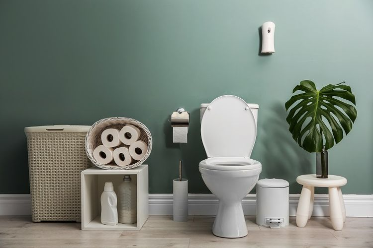

5 Teh Ini Punya Efek Negatif untuk Kesehatan, Ada Favoritmu?
Teh adalah salah satu minuman favorit bagi sebagian besar orang. Biasanya, teh diminum sebelum memulai aktivitas, saat bersantai, atau bahkan sebelum tidur malam. Namun, teh yang terkenal bermanfaat bagi tubuh ternyata bisa jadi berbahaya untuk kesehatan. Sebab, ada beberapa teh yang justru memberikan efek negatif bagi tubuh bila terlalu sering dikonsumsi.
Berikut lima teh yang bisa berbahaya bagi kondisi kesehatan tertentu :
1. Teh comfrey
Ahli gizi dan peneliti nutrisi, Hiba Batool, mengatakan bahwa teh comfrey mengandung alkaloid pirolizidin yang dapat menyebabkan kerusakan hati.
"Teh yang banyak digemari karena dianggap berkhasiat ini mengandung alkaloid pirolizidin yang bisa menyebabkan kerusakan hati serius," kata Batool.
Menurut studi yang dipublikasikan Public Health Nutrition pada 2004, terlalu banyak mengonsumsi teh herbal dari daun comfrey dapat meningkatkan risiko toksisitas hati.
2. Teh pappermint
Teh peppermint adalah salah satu jenis teh favorit sebagian besar orang. Namun, terlalu banyak mengonsumsi teh peppermint dapat meningkatkan risiko gangguan kesehatan, seperti iritasi dan keracunan.
"Terlalu banyak mengonsumsi teh peppermint dapat menyebabkan iritasi dan dapat menjadi racun dalam jumlah besar," ujar ahli nutrisi, Cline Beitchman.
Menurut Beitchman, bahan aktif mint dan menthol yang terkandung di dalam teh peppermint dapat memengaruhi dan mengganggu sistem pemanasan dan pendinginan biologis manusia.
3. Teh lemon
Selain teh peppermint, teh lemon juga digandrungi oleh sebagian besar orang. Teh lemon dipercaya memiliki khasiat yang menjaga elastisitas kulit sehingga membuat Anda nampak awet muda.
Namun, para ahli mengatakan bahwa teh lemon dapat meningkatkan risiko masalah kesehatan mulut.
"Teh lemon memiliki kadar timbal yang lebih tinggi daripada teh lainnya," kata ahli gizi, Jay Cowin. Cowin mengatakan, teh cair dan bubuk terbukti mengandung kadar flouride dan keasaman yang tinggi sehingga dapat menyebabkan kerusakan gigi dan sariawan.
4. Teh hitam
Sebenarnya, teh hitam tidak berbahaya untuk dikonsumsi. Namun, teh ini bisa berbahaya bagi tubuh jika dikonsumsi setiap hari karena mengandung kafein yang tinggi.
"Teh hitam mengandung oksalat tinggi yang dapat menumpuk di jaringan dan menyebabkan nyeri sendi atau nyeri saluran kemih dan kandung kemih," imbuh ahli gizi di Sovereign Laboratories, Alicia Galvin.
5. Teh licorice
Orang dengan darah tinggi perlu mempertimbangkan ulang untuk mengonsumsi teh licorice. Sebab, teh yang satu ini dapat memicu peningkatan tekanan darah.
Selain penderita tekanan darah tinggi, Galvin mengatakan bahwa peningkatan tekanan darah akibat teh licorice juga bisa dialami oleh seseorang dengan tensi normal.
INSPIRASI KESEHATAN
-

Mana Lebih Sehat, Toilet Jongkok atau Duduk?
Pada beberapa penelitian, dr Nadia Alaydrus selaku Dokter Spesialis Kecantikan sekaligus Influencer menjelaskan, penggunaan toilet jongkok lebih disarankan untuk digunakan dibandingkan toilet duduk.
-
Urutan Pemakaian Skincare Pagi dan Malam yang Wajib Diketahui
“Urutan skincare pada pagi hari dan malam hari kurang lebih sama, hanya saja terdapat sedikit perbedaan. Moisturizer menjadi salah satu tahap yang penting dalam skincare.”
-

5 Manfaat Chia Seed yang Sayang untuk Dilewatkan
Chia seed mengandung beragam nutrisi, seperti karbohidrat, protein, serat, serta omega-3 dan omega-6. Selain itu, biji-bijian ini juga mengandung sejumlah vitamin dan mineral, seperti vitamin A, vitamin B, kalsium, fosfor, selenium, kalium, zat besi, dan magnesium.
-

Putin Samakan Israel dengan Nazi
Menyamakan tindakan Israel yang secara paksa ingin memblokade Jalur Gaza Palestina seperti blokade Nazi terhadap Leningrad.
-

Kisah Kematian Tragis Mahapatih Majapahit
Mahapatih Majapahit Mpu Nambi tak bisa membayangkan kepulanganya karena ayahnya sakit bakal menjadi...
-

Waspada!! 16 Kali Muntahan Lava Pijar Gunung Merapi
12 jam terakhir terjadi 16 kali guguran lava pijar dari puncak Gunung Merapi dengan arah dan jarak luncur berbeda